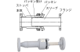

2023年
問題118 給湯設備に関する次の記述のうち，最も不適当なものはどれか．
（1）スリーブ形伸縮管継手は，伸縮の吸収量が最大200mm程度である．
（2）中央式給湯設備の末端給湯温度は，ピーク使用時においても55℃以上とする．
（3）事務所用途の建築物における1日当たりの設計給湯量は，30L/人程度である．
（4）耐熱性硬質塩化ビニルライニング鋼管の使用温度は，85℃以下とする．
（5）ガス瞬間湯沸器の能力表示で1号とは，流量1L/minの水の温度を25℃上昇させる能力である．
2023年
問題118 正解（3） 頻出度AAA
事務所の設計用給湯量は，手洗いと湯呑を洗うぐらいなので，もっと少なくて，7～10L/(人･日)程度である（2023-118-1表参照）．
2023-118-1表 建物用途別設計湯量
| 建物用途 | 設計値（いずれも年平均1日当たり） |
| 事務所 | 7～10L/人 |
| ホテル（客室） | 150～250L/人 |
| 総合病院 | 2～4L/m2 |
| 100～200L/床 | |
| レストラン | 40～80L/m2 |
| 軽食店（そば，喫茶，軽食） | 20～30L/m2 |
| 集合住宅 | 150～300L/戸 |
| 大浴場洗い場 | 50L/人 |
出典 出典 公益財団法人日本建築衛生管理教育センター
「新建築物の環境衛生管理第2版第1刷」中巻432頁 表6-4-2(2)を基に作成
-(1) 伸縮管継手は給湯配管の熱伸縮を吸収するもので，スリーブ型とベローズ型がある．伸縮吸収量はスリーブ型の方が大きい．
スリーブ型伸縮管継手（2023-118-1図）は，スリーブがパッキン部をすべって管の伸縮量を吸収する形式で，伸縮の吸収量が最大200mm程度と大きい．ただし伸縮吸収量の大きい場合は，枝管接続部に過大な応力が作用するので注意が必要である．
ベローズ型伸縮管継手（2023-118-2図）は，ベローズで管の伸縮を吸収する形式である．ベローズが 1 つの単式と2つ組み合わせた複式がある．材質としてはほとんどがステンレス鋼製である．正常な状態では漏水することはないが，ベローズが腐食や疲労破壊して漏水することがある．複式は，両側の伸縮量を吸収する．ベローズ型伸縮管継手の最大伸縮量は，複式で70mm程度，単式で35mm 程度である．

出典 写真 株式会社 ベン
https://www.venn.co.jp/products/expansion_joint/js-5hf
出典 写真 株式会社 ベン
https://www.venn.co.jp/products/expansion_joint/jb-18
-(2) 中央式給湯設備における給湯温度は，レジオネラ症の発生を防ぐために60℃（最低でも55℃）で給湯し，返湯温度も50℃以下にならないようにする．
維持管理が適切に行われており，かつ，未端の絵水栓における当該水の水温温が55℃度以上に保持されている場合は，水質検査のうち，遊離残留塩素の含有率についての検査を省略しても良い．
-(4) 樹脂ライニング管，樹脂管の使用温度2023-118-2表参照．
2023-118-2表 樹脂ライニング管，樹脂管の使用温度
（JIS K 6776：2016，6778：2016，6769：2016）
| 耐熱性硬質塩化ビニルライニング鋼管 | 85℃以下 |
| 耐熱性硬質ポリ塩化ビニル管 ポリブテン管 |
90℃以下 |
| 架橋ポリエチレン管 | 95℃以下 |
樹脂管は使用温度が高くなると許容使用圧力は低くなる（2023-118-3表）．
2023-118-3表 耐熱性硬質ポリ塩化ビニル管の使用温度及び設計圧力
（JIS K 6776：2016）
| 使用温度［℃］ | 5〜40 | 41〜60 | 61〜70 | 71〜90 |
| 設計圧力［MPa］ | 1.0 | 0.6 | 0.4 | 0.2 |
また，樹脂管を温度の高い湯に使用すると，塩素による劣化が生じやすい．
-(5) ガス給湯器のような給湯器の加熱能力は号数で表され，1分間に何リットルの水の温度を25℃上昇させられるかによる（16Lなら16号）．
1号＝4.182kJ/kg×25℃÷60秒＝1.7432kJ/秒≒1.74kWに相当